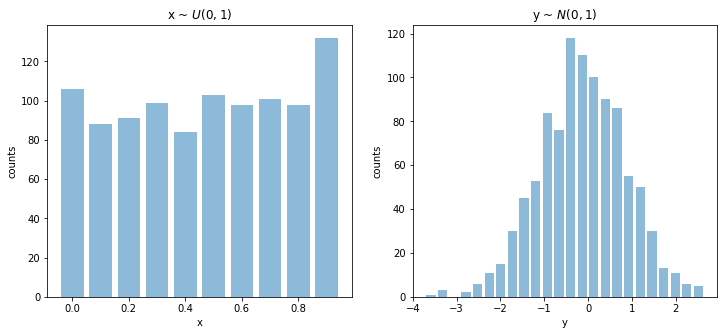

Computing entropy random signal
Contents
Entropy
Computing entropy random signal¶
import numpy as np
import matplotlib.pyplot as plt
import pandas as pd
import spkit as sp
sp.__version__
'0.0.9.4'
x = np.random.rand(1000)
y = np.random.randn(1000)
plt.figure(figsize=(12,5))
plt.subplot(121)
sp.HistPlot(x,show=False)
plt.title(r'x ~ $U(0,1)$')
plt.ylabel('counts')
plt.xlabel('x')
plt.subplot(122)
sp.HistPlot(y,show=False)
plt.title(r'y ~ $N(0,1)$')
plt.ylabel('counts')
plt.xlabel('y')
plt.show()

#Shannan entropy
H_x= sp.entropy(x,alpha=1)
H_y= sp.entropy(y,alpha=1)
#Rényi entropy
Hr_x= sp.entropy(x,alpha=2)
Hr_y= sp.entropy(y,alpha=2)
H_xy= sp.entropy_joint(x,y)
H_x1y= sp.entropy_cond(x,y)
H_y1x= sp.entropy_cond(y,x)
I_xy = sp.mutual_Info(x,y)
H_xy_cross= sp.entropy_cross(x,y)
D_xy= sp.entropy_kld(x,y)
print('Shannan entropy')
print('---------------')
print('Entropy of x: H(x) = ',H_x)
print('Entropy of y: H(y) = ',H_y)
print('-')
print('Rényi entropy')
print('---------------')
print('Entropy of x: H(x) = ',Hr_x)
print('Entropy of y: H(y) = ',Hr_y)
print('-')
print('Mutual Information I(x,y) = \t',I_xy)
print('Joint Entropy H(x,y) = \t',H_xy)
print('-')
print('Conditional Entropy of : H(x|y) = ',H_x1y)
print('Conditional Entropy of : H(y|x) = ',H_y1x)
print('-')
print('Cross Entropy of : H(x,y) = \t',H_xy_cross)
print('Kullback–Leibler divergence : Dkl(x,y) = \t',D_xy)
Shannan entropy
---------------
Entropy of x: H(x) = 3.437184830854311
Entropy of y: H(y) = 3.978782249495876
-
Rényi entropy
---------------
Entropy of x: H(x) = 3.4174093118348807
Entropy of y: H(y) = 3.744061837699739
-
Mutual Information I(x,y) = 0.12169653445696493
Joint Entropy H(x,y) = 7.294270545893222
-
Conditional Entropy of : H(x|y) = 3.3154882963973464
Conditional Entropy of : H(y|x) = 3.8570857150389113
-
Cross Entropy of : H(x,y) = 11.082316566901264
Kullback–Leibler divergence : Dkl(x,y) = 4.872635477032295
other entropy funtions¶
Hx_se = sp.entropy_spectral(x,fs=1,method='fft')
Hx_sam = sp.entropy_sample(x,m=4,r=0.2*np.std(x))
Hx_apx = sp.entropy_approx(x,m=4,r=0.2*np.std(x))
Hx_svd = sp.entropy_svd(x,order=3, delay=1)
Hx_prm = sp.entropy_permutation(x,order=3, delay=1)
Hy_se = sp.entropy_spectral(y,fs=1,method='fft')
Hy_sam = sp.entropy_sample(y,m=4,r=0.2*np.std(y))
Hy_apx = sp.entropy_approx(y,m=4,r=0.2*np.std(y))
Hy_svd = sp.entropy_svd(y,order=3, delay=1)
Hy_prm = sp.entropy_permutation(y,order=3, delay=1)
HX = [H_x,Hr_x,Hx_se,Hx_sam,Hx_apx, Hx_svd, Hx_prm]
HY = [H_y,Hr_y,Hy_se,Hy_sam,Hy_apx, Hy_svd, Hy_prm]
C1 = ['Shannan entropy', 'Rényi entropy','Spectral entropy','Sample entropy',
'Approximate entropy','SVD entropy','Permutation entropy']
display(pd.DataFrame(np.c_[HX, HY],index=C1, columns=['x','y']))
| x | y | |
|---|---|---|
| Shannan entropy | 3.437185 | 3.978782 |
| Rényi entropy | 3.417409 | 3.744062 |
| Spectral entropy | 0.739721 | 0.733247 |
| Sample entropy | 2.106841 | 1.734601 |
| Approximate entropy | 0.086072 | 0.119064 |
| SVD entropy | 1.348778 | 1.584742 |
| Permutation entropy | 2.579316 | 2.582252 |
HXY = [I_xy, H_xy, H_x1y, H_y1x, H_xy_cross, D_xy]
C2 = ['Mutual Information: I(x,y)', 'Joint Entropy: H(x,y)', 'Conditional Entropy: H(x|y)',
'Conditional Entropy: H(y|x)','Cross Entropy: H(x,y)', 'Kullback–Leibler divergence : Dkl(x,y)']
display(pd.DataFrame(np.c_[HXY],index=C2, columns=['x,y']))
| x,y | |
|---|---|
| Mutual Information: I(x,y) | 0.121697 |
| Joint Entropy: H(x,y) | 7.294271 |
| Conditional Entropy: H(x|y) | 3.315488 |
| Conditional Entropy: H(y|x) | 3.857086 |
| Cross Entropy: H(x,y) | 11.082317 |
| Kullback–Leibler divergence : Dkl(x,y) | 4.872635 |
Entropy of EEG signal¶
from spkit.data import load_data
X,ch_names = load_data.eegSample()
print(X.shape)
print(ch_names)
(2048, 14)
['AF3', 'F7', 'F3', 'FC5', 'T7', 'P7', 'O1', 'O2', 'P8', 'T8', 'FC6', 'F4', 'F8', 'AF4']
x1 =X[:,0] #'AF3' - Frontal Lobe
x2 =X[:,6] #'O1' - Occipital Lobe
#Shannan entropy
H_x1= sp.entropy(x1,alpha=1)
H_x2= sp.entropy(x2,alpha=1)
#Rényi entropy
Hr_x1= sp.entropy(x1,alpha=2)
Hr_x2= sp.entropy(x2,alpha=2)
#Joint entropy
H_x12= sp.entropy_joint(x1,x2)
#Conditional Entropy
H_x12= sp.entropy_cond(x1,x2)
H_x21= sp.entropy_cond(x2,x1)
#Mutual Entropy
I_x12 = sp.mutual_Info(x1,x2)
#Cross Entropy
H_x12_cross= sp.entropy_cross(x1,x2)
#Diff Entropy
D_x12= sp.entropy_kld(x1,x2)
print('Shannan entropy')
print('Entropy of x1: H(x1) =\t ',H_x1)
print('Entropy of x2: H(x2) =\t ',H_x2)
print('-')
print('Rényi entropy')
print('Entropy of x1: H(x1) =\t ',Hr_x1)
print('Entropy of x2: H(x2) =\t ',Hr_x2)
print('-')
print('Joint Entropy H(x1,x2) =\t',H_x12)
print('Mutual Information I(x1,x2) =\t',I_x12)
print('Conditional Entropy of : H(x1|x2) =\t',H_x12)
print('Conditional Entropy of : H(x2|x1) =\t',H_x21)
print('-')
print('Cross Entropy of : H(x1,x2) =\t',H_x12_cross)
print('Kullback–Leibler divergence : Dkl(x1,x2) =\t',D_x12)
Shannan entropy
Entropy of x1: H(x1) = 4.811416424350645
Entropy of x2: H(x2) = 4.697278111823318
-
Rényi entropy
Entropy of x1: H(x1) = 4.239955818998481
Entropy of x2: H(x2) = 4.145472461333239
-
Joint Entropy H(x1,x2) = 3.655513859907648
Mutual Information I(x1,x2) = 1.1559025644429965
Conditional Entropy of : H(x1|x2) = 3.655513859907648
Conditional Entropy of : H(x2|x1) = 3.541375547380321
-
Cross Entropy of : H(x1,x2) = 5.686498222841184
Kullback–Leibler divergence : Dkl(x1,x2) = 0.7202757885313226